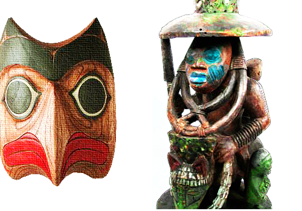

Did your navigation system shut down in the middle of that asteroid field? We can repair any dings and scrapes to your spacecraft!
Desenvolvimento de encontros e oficinas para transmitir a beleza das histórias africanas por meio da construção de mini-games em escolas públicas, pontos de cultura, centros culturais, comunidades quilombolas e indígenas e eventos culturais pelo país.
série de programas de rádio produzida a partir dos contos da mitologia de matriz africana preservados e difundidos nas comunidades-terreiro de Recife e Olinda. Em breve.
Webgames e metodologias como forma de combater o preconceito, o racismo e a intolerância religiosa